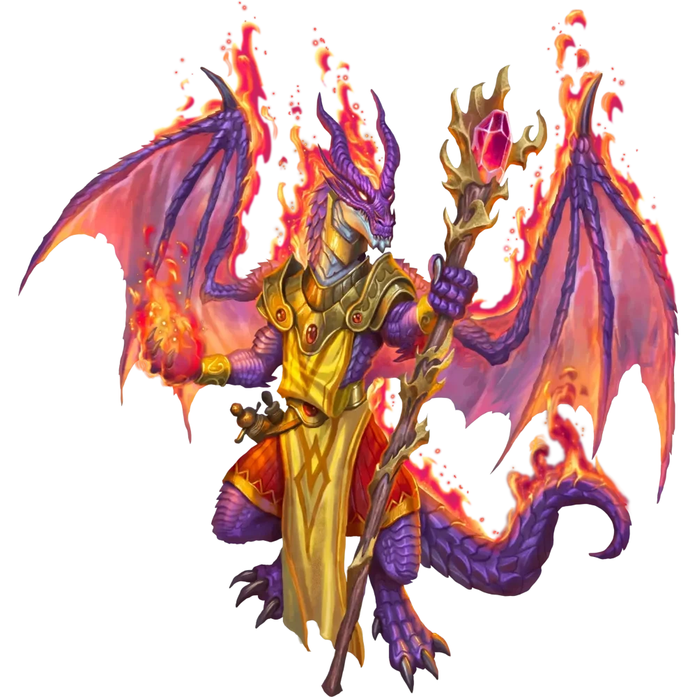

|
在众多类人种族的文化中，巨龙都是力量与强盛的象征。因此，再加上与生俱来的傲慢，巨龙往往很难承认事情出了差错。然而，有些巨龙体内奔涌着狂暴的魔法能量，这股能量一旦失控飙升，便会彻底改变它们的一生。有时，整支龙族血脉都会继承这种魔力，并在漫长的世代中延续下去。但对于这些所谓的“异类龙”而言，这股失控的能量究竟意味着什么？整个巨龙社会或许对它们不屑一顾，但它们强大的魔力却为其带来了无穷无尽的未开发潜能！ 你是一条魔泉龙，你全身的每一寸肌肉与每一片龙鳞都浸透着你几乎难以抑制的魔力。你是异类龙家族的一员。你的关联伤害类型为火焰。你的吐息武器为15尺锥状的火焰，每次使用时都会变换色彩，需要进行敏捷豁免。 巨龙特质属性值提升。你的力量或智力值提升2点。 年龄。任何年龄段的巨龙都可以举行永恒之光仪式，因此哪怕是一条刚完成仪式的初生永光龙，严格来说也可能已经活了数千岁。不过，仪式澎湃的魔法能量会洗去衰老的痕迹。从仪式中苏醒的初生永光龙洋溢着青春活力与无限潜能。尽管部分学者持不同看法，但只要不死于暴力或其他灾祸，永光龙的寿命与传统派巨龙同样漫长。 阵营。永光龙的龙族血统会强烈影响其信念，但影响程度远不如同血统的传统派巨龙。例如，银永光龙往往是善良的捍卫者，而黑永光龙则往往狡诈刻薄。然而，永光龙深知龙脉并非不可违逆的宿命。任何永光龙都可以完全抛弃先祖的旧习，去开拓属于自己的道路。 体型。除非一条永光龙将自身魔力专注于增大体型（许多永光龙都会这样做），否则它们的体型并不会比常见的类人种族更大。你的体型可在小型或中型之间自选。 速度。你的基础步行速度为30尺。 黑暗视觉。你同样具备传统派巨龙的敏锐感官。在距离你60尺范围内，你可以将微光光照视作明亮光照，将黑暗视作微光光照。你在黑暗中无法分辨颜色，只能看到灰度的影像。 龙之馈赠。你从巨龙职业所列的龙之馈赠中获得一项龙之馈赠。如果某项馈赠具有先决条件，你必须满足其先决条件才能获得它。 龙类。你的生物种类为龙类，而非类人生物。 天生武器。除常规的徒手打击外，你还获得两种天生武器攻击：啃咬攻击与爪击攻击。你的啃咬攻击造成1d6点穿刺伤害；你的爪击攻击造成1d4点挥砍伤害。 你必须至少有一只手空闲才能发动爪击攻击。 你在进行爪击攻击的攻击检定和伤害掷骰时可以使用敏捷代替力量，但啃咬攻击不适用。 语言。你能够说、读、写通用语和龙语。 戏法。你习得一门自选的法师法术列表中的戏法。你施展该戏法的施法关键属性由你在智力、感知或魅力中自选。 永光魔泉龙背景设定永光魔泉龙几乎就是由纯粹魔力构筑而成的存在，因此他们之中有众多成员选择举行永恒之光仪式也就顺理成章了。这甚至都未必是他们当年撞见的最古怪、最狂野的魔法效应――尽管对于一座行走的狂野魔法源泉而言，尝试如此繁复精密的仪式固然凶险不小。虽然传统派魔泉龙也有自己的门路去体验世间万千魔法、搜罗神器并抄录法术，但永光魔泉龙显然拥有多得多的机会，尤其是因为这项仪式本就鼓励他们走遍世界各地寻觅冒险。若有永光魔泉龙能在某座早已被遗忘的地下城深处发现一批藏匿的魔法物品与法术书，借此更深入地参透自身的特殊体质，那可谓洪福齐天；又或者，他们也可能找到一个宽容接纳自己的施法者社群，与同道们切磋奥秘。诚然，传统派魔泉龙理论上也能做到这两件事，但对他们而言无疑要艰难得多。在不少案例中，永光魔泉龙会与传统派魔泉龙结成互助搭档――毕竟，唯有同病相怜的族人才能真正理解彼此独一无二的境遇。 许多冒险者对与永光魔泉龙结伴同行心存顾虑，因为他们变幻莫测的狂野浪涌有时会成事不足、败事有余。不过也有一些酷爱冒险的赌徒十分欣赏这种不确定性――毕竟一次恰逢其时的幸运狂野浪涌足以在危局中瞬间逆转战局，有时还能带来更加丰厚的战利回报！擅长施法的永光魔泉龙会尽力提前警示同伴可能发生的危险，并设法减轻自身浪涌可能造成的伤害；但浪涌的随机本质终究意味着没有任何人能真正绝对安全。有责任心的魔泉龙会刻苦训练以降低浪涌触发的频率，或是钻研保护盟友免受波及的手段。然而，永光魔泉龙因某次浪涌事故而断送一段友谊（甚至更糟――害死一位挚友）的悲剧也并非闻所未闻。经历过这般惨祸的魔泉龙可能会陷入深重的抑郁，在脑海中一遍又一遍地回放当时的惨状，苦苦寻觅洗刷自身负罪感的救赎之道。在其他盟友的扶持下，有的巨龙能够走出阴霾、重返生活；但也有一些不幸的魔泉龙会彻底被悲痛击垮――他们的狂野浪涌开始将这份绝望传染给周遭，原本绚烂夺目或轰鸣喧嚣的魔法效应也会随之变得黯淡沉寂。这种情况固然罕见，但一旦某条魔泉龙陷入这般境地，便几乎再也回不到从前的模样了。 出于与生俱来的魔法天性，永光魔泉龙大多青睐能以某种形式赋予施法能力的职业。术士是永光魔泉龙中最受欢迎的职业之一，因为它有助于收束并引导流淌于体内的澎湃魔力。更具学者气质的魔泉龙可能会潜心研习成为法师，而笃信神明的个体则会成为牧师。当然，也有一些魔泉龙不想再跟魔法扯上半点关系，转而专注于武艺修行，将自己锻炼成战士、武僧或游荡者等职业。虽然这意味着他们未能充分利用自身的血统天赋，但他们也无需再提心吊胆地防范随机爆发的有害效应把战场搅得天翻地覆了。 寻觅魔泉之源尽管魔泉魔法并非源于某种特定现象或接触过某处特殊地点，但一些永光魔泉龙坚信，世上一定存在着某种方法，能让他们更安全地汲取体内倍增的天生魔力，而不会触发狂野浪涌。这些巨龙四处寻访魔力运转异于常态的奇特地域，修习深奥的冥想与克己秘法，甚至调配并饮下古怪的灵药，只盼能彻底驾驭内在的魔力。有些魔泉龙声称自己已大功告成，但即便是这些佼佼者，实际上也只是在压制狂野浪涌时稍微轻松了几分，或是在浪涌爆发时更能引导其效应方向罢了。 延伸阅读：对应怪物图鉴：魔泉龙 ・ 主书通用巨龙种族特质 ・ 巨龙职业 ・ 本卷新增龙之馈赠 |
 魔泉龙（Wellspring Dragon） |